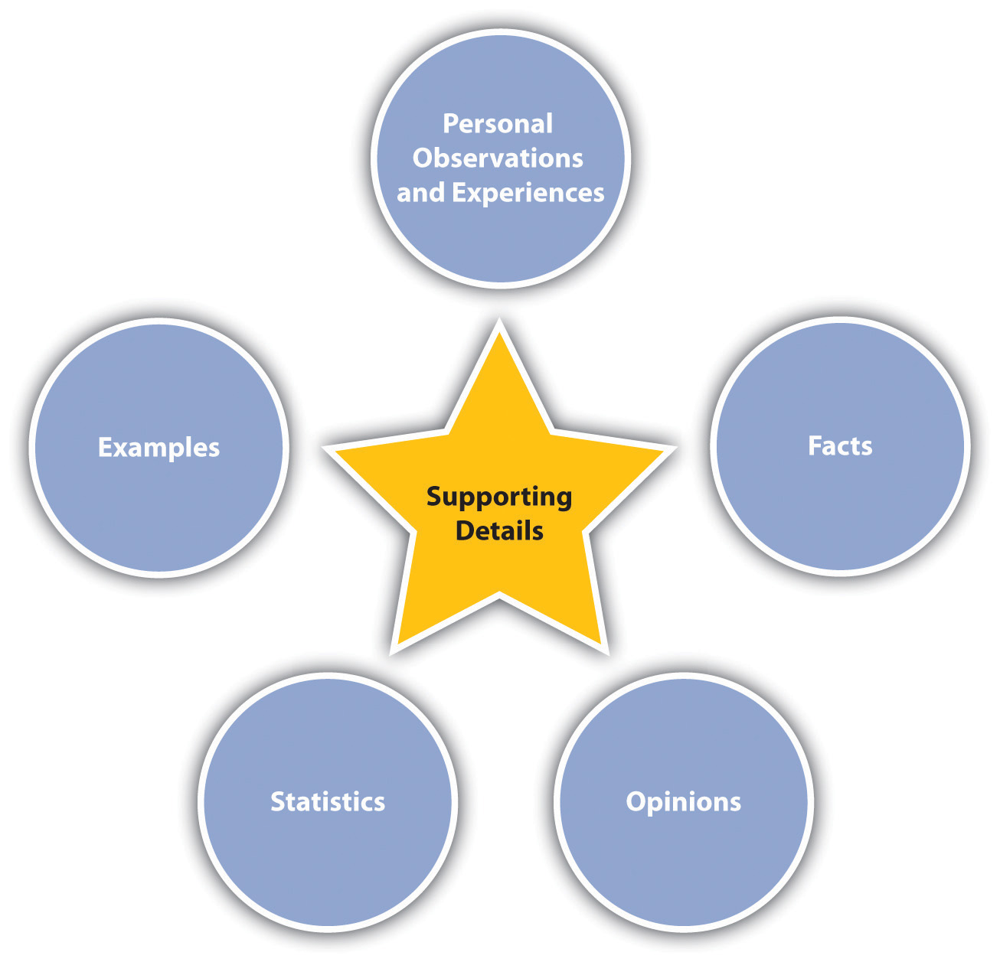
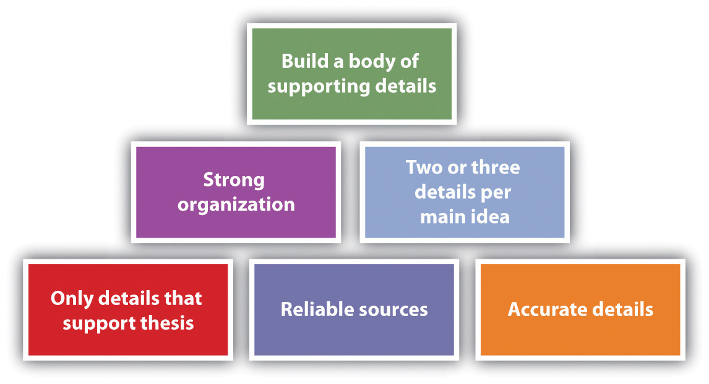

Supporting your thesis is the overall goal of your whole paper. It means presenting information that will convince your readers that your thesis makes sense. You need to take care to choose the best supporting details for your thesis.
Figure 6.1
You can and should use a variety of kinds of support for your thesis. One of the easiest forms of support to use is personal observations and experiences. The strong point in favor of using personal anecdotes is that they add interest and emotion, both of which can pull audiences along. On the other hand, the anecdotal and subjective nature of personal observations and experiences makes them too weak to support a thesis on their own.
Since they can be verified, facts can help strengthen personal anecdotes by giving them substance and grounding. For example, if you tell a personal anecdote about having lost twenty pounds by using a Hula-Hoop for twenty minutes after every meal, the story seems interesting, but readers might not think it is a serious weight-loss technique. But if you follow up the story with some facts about the benefit of exercising for twenty minutes after every meal, the Hula-Hoop story takes on more credibility. Although facts are undeniably useful in writing projects, a paper full of nothing but fact upon fact would not be very interesting to read.
Like anecdotal information, your opinions can help make facts more interesting. On their own, opinions are weak support for a thesis. But coupled with specific relevant facts, opinions can add a great deal of interest to your work. In addition, opinions are excellent tools for convincing an audience that your thesis makes sense.
Similar to your opinions are details from expert testimony and personal interviews. Both of these kinds of sources provide no shortage of opinions. Expert opinions can carry a little more clout than your own, but you should be careful not to rely too much on them. However, it’s safe to say that finding quality opinions from others and presenting them in support of your ideas will make others more likely to agree with your ideas.
Statistics can provide excellent support for your thesis. Statistics are facts expressed in numbers. For example, say you relay the results of a study that showed that 90 percent of people who exercise for twenty minutes after every meal lose two pounds per week. Such statistics lend strong, credible support to a thesis.
ExamplesChoices of details used to clarify a point for readers.—real or made up—are powerful tools you can use to clarify and support your facts, opinions, and statistics. A detail that sounds insignificant or meaningless can become quite significant when clarified with an example. For example, you could cite your sister Lydia as an example of someone who lost thirty pounds in a month by exercising after every meal. Using a name and specifics makes it seem very personal and real. As long as you use examples ethically and logically, they can be tremendous assets. On the other hand, when using examples, take care not to intentionally mislead your readers or distort reality. For example, if your sister Lydia also gave birth to a baby during that month, leaving that key bit of information out of the example would be misleading.
You are likely to find or think of details that relate to your topic and are interesting, but that do not support your thesis. Including such details in your paper is unwise because they are distracting and irrelevant.
In today’s rich world of technology, you have many options when it comes to choosing sources of information. Make sure you choose only reliable sources. Even if some information sounds absolutely amazing, if it comes from an unreliable source, don’t use it. It might sound amazing for a reason—because it has been amazingly made up.
Figure 6.2
When you find a new detail, make sure you can find it in at least one more source so you can safely accept it as true. Take this step even when you think the source is reliable because even reliable sources can include errors. When you find new information, make sure to put it into your essay or file of notes right away. Never rely on your memory.
Take great care to organize your supporting details so that they can best support your thesis. One strategy is to list the most powerful information first. Another is to present information in a natural sequence, such as chronologicalA method of narrative arrangement that places events in their order of occurrence. order. A third option is to use a compare/contrastA writing pattern used to explain how two (or more) things are alike and different. format. Choose whatever method you think will most clearly support your thesis.
Make sure to use at least two or three supporting details for each main idea. In a longer essay, you can easily include more than three supporting details per idea, but in a shorter essay, you might not have space for any more.
Choose a topic of interest to you. Write a personal observation or experience, a fact, an opinion, a statistic, and an example related to your topic. Present your information in a table with the following headings.
| Topic: | |
|---|---|
| Personal observation or experience | |
| Fact | |
| Opinion | |
| Statistic | |
| Example |
Choose a topic of interest to you. On the Internet, find five reliable sources and five unreliable sources and fill in a table with the following headings.
| Topic: | |||
| Reliable Sources | Why Considered Reliable | Unreliable Sources | Why Considered Unreliable |